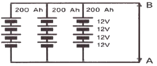
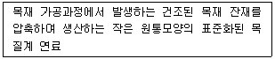
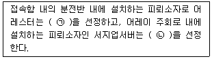
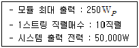
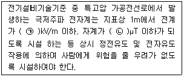

신재생에너지발전설비기사(구) (2017-09-23 기출문제)
1과목: 임의 구분
1. 어떤 전지의 외부회로 저항은 5Ω 이고 전류는 8A가 흐른다. 외부회로에 5Ω 대신에 15 Ω의 저항을 접속하면 4A로 떨어진다. 이 전지의 기전력은?
- 100V
- 80V
- 60V
- 40V
(정답률: 71%)

2. 2012년부터 국내 총 발전량의 일정 비율을 신재생에너지로 의무화하는 제도는?
- REC(Renewable Energy Certificate)
- FIT(Feed In Tariff)
- RPS(Renewable Portfolio Standard)
- FERC(Federal Energy Regulatory Comission)
(정답률: 77%)
3. 뇌서지 등의 피해로부터 pV시스템을 보호하기 위한 대책으로 적합하지 않은 것은?
- 피뢰소자를 어레이 주회로 내에 분산시켜 설치함과 동시에 접속함에도 설치한다.
- 뇌우의 발생지역에서는 직류전원 측에 내뢰 트랜스를 설치하여 보다 완전한 대책을 취한다.
- 접속함 및 분전반 안에 설치하는 피뢰소자는 방전내량이 큰 것을 선정한다.
- 저압 배전선으로부터 침입하는 뇌서지에 대해서는 분전반에 피뢰소자를 설치한다.
(정답률: 67%)
4. 태양광발전용 축전지의 방전심도에 대한 설명으로 틀린 것은?
- 방전심도를 낮게(30~40%) 설정하면 전지수명이 증가한다.
- 방전심도를 깊게(70~80%) 설정하면 전지 수명이 단축된다.
- 방전심도를 낮게(30~40%) 설정하면 잔존용량이 감소한다.
- 방전심도를 깊게(70~80%) 설정하면 전지 이용률이 증가한다.
(정답률: 71%)
5. 인버터에 대한 효율을 각각 변환효율(ηcon), 추적효율(ηtr), 유로효율(ηero) 이라 할 때 정격 효율(ηinv)은 어떻게 나타낼 수 있는가?
- 변환효율(ηcon) × 추적효율(ηtr)
- 추적효율(ηtr) × 유로효율(ηero)
- 변환효율(ηcon) / 추적효율(ηtr)
- 추적효율(ηtr) / 변환효율(ηcon)
(정답률: 66%)
6. 다음 그림과 같이 축전지회로가 구성되어 있다. 단자 A, B 사이에 나타나는 출력전압과 축전지 용량은?

- DC 48 V, 200 Ah
- DC 48 V, 600 Ah
- DC 12 V, 200 Ah
- DC 12 V, 600 Ah
(정답률: 88%)
7. 인버터의 회로방식에 따른 종류가 아닌 것은?
- 상용주파 변압기 절연방식
- 고주파 변압기 절연방식
- 고조파 변압기 절연방식
- 트랜스리스(Transless) 방식
(정답률: 84%)
8. v = 100√2sin(120πt + (π/3))(V) 인 정현파 교류전압의 실효값과 주파수는?
- 141 V, 60 Hz
- 100 V, 60 Hz
- 141 V, 50 Hz
- 100 V, 50 Hz
(정답률: 71%)
9. 다음 중 재생에너지가 아닌 것은?
- 수소에너지
- 폐기물에너지
- 바이오에너지
- 해양에너지
(정답률: 72%)
10. 다음 태양복사에 관한 설명 중 틀린 것은?
- 태양복사량의 평균값을 태양상수라고 하며 약 1367 W/m2 이다.
- 직달복사는 태양으로부터 지표면에 직접 도달되는 복사로 물체에 강한 그림자를 만드는 성분이다.
- 산란복사는 태양복사가 지표면에 도달되기 전에 구름이나 대기 중의 먼지에 의해 반사되지 않고 확산된 성분이다.
- 매우 흐린 날 특히 겨울에는 태양복사는 거의 모두 산란복사된다.
(정답률: 52%)
11. 태양광 전지에서 생산된 전력 125W가 인버터에 입력되어 인버터 출력이 100W가 되면 인버터의 변환 효율은 몇 %인가?
- 45 %
- 64 %
- 80 %
- 92 %
(정답률: 87%)
12. 도선의 길이가 3배로 늘어나고 반지름이 1/3로 줄어들 경우 그 도선의 저항은 어떻게 변하겠는가?
- 9배 증가
- 1/9 로 감소
- 27배 증가
- 1/27로 감소
(정답률: 75%)
13. 다음 중 박막형 태양 전지 모듈의 종류에 해당되지 않는 것은?
- 비정질 실리콘 전지
- 다결정 전지
- Cd-Te 전지
- 염료 전지
(정답률: 50%)
14. 독립형 태양광발전시스템에서 축전지의 방전 시 모듈로 유입하는 전류를 억제하기 위해 설치하는 소자는?
- 역류방지 소자
- 바이패스 소자
- 방전방지 소자
- 출력조정 소자
(정답률: 87%)
15. 인버터의 직류동작전압을 일정시간 간격으로 약간 변동시켜 그 때의 태양전지 출력전력을 계측하여 사전에 발생한 부분과 비교를 하게 되고，항상 전력이 크게 되는 방향으로 인버터의 직류전압을 변화시키는 기능은?
- 직류 검출제어 기능
- 자동전압 조정 기능
- 자동운전 정지제어 기능
- 최대전력 추종제어 기능
(정답률: 82%)
16. 발전과정에서 화학에너지를 전기에너지로 변환하는 신•재생에너지는?
- 풍력
- 지열
- 태양열
- 연료전지
(정답률: 91%)
17. 태양광 모듈 표면의 황변현상은 태양광 모듈 내부의 충진재(EVA)가 무엇과 화학반응하여 변색되는 것을 말하는가?
- 가시광선
- 자외선
- 적외선
- 습기
(정답률: 72%)
18. 다음에서 설명하는 목질계 연료는 무엇인가?

- 목탄
- 목질칩
- 목질 펠릿
- 목질 브리켓
(정답률: 83%)
19. 인버터의 부하가 인덕턴스인 경우 스위칭소자가 ON-OFF 시 인덕턴스 양단에 나타나는 역기전력에 의한 스위칭소자의 내전압을 초과하여 소손되는 것을 방지하는 용도의 소자는?
- IGBT
- 피뢰소자
- 환류 다이오드
- 바이패스 다이오드
(정답률: 67%)
20. 태양전지의 특징을 설명한 것 중 틀린 것은?
- 빛이 있을 때 전기를 생산한다.
- 전기를 저장하는 기능을 가진다.
- 전압의 세기는 여러 장의 태양전지를 직렬로 연결시켜 조정한다.
- 전류의 세기는 병렬연결이나 태양전지의 면적으로 조정할 수 있다.
(정답률: 81%)
2과목: 임의 구분
21. 전기도면 관련 기호 중 전동기를 나타내는 기호는?
- Ⓜ
- Ⓗ
- Ⓖ
- Ⓣ
(정답률: 83%)
22. 태양광발전에서 인버터 출력측의 3상 4선식 간선의 전압강하 계산식으로 알맞은 것은?
- 17.8LI / 1000A
- 20.8LI / 1000A
- 30.8LI / 1000A
- 35.6LI / 1000A
(정답률: 59%)
23. 태양광발전시스템의 연간 누적발전량이 15000kWh, 시스템 용량은 10kW, 연간 운전일수가 350일 일 때, 시스템 이용률은 약 몇 %인가?
- 14.29%
- 16.45%
- 17.85%
- 19.04%
(정답률: 57%)
24. 파워컨디셔너의 종류 중 인버터의 대수 및 연결방식에 따른 구분에서 최대 효율 및 MPP 최적 제어가 가능하나 투자비가 가장 많이 드는 방식은 무엇인가?
- 마스터 슬레이브 방식
- 모듈인버터 방식
- 병렬운전 방식
- 중앙집중식
(정답률: 64%)
25. 피뢰소자의 선정방법 설명 중 ( )에 알맞은 내용을 나열한 것은?

- ㉠ 충전내량이 큰 것，㉡ 충전내량이 작은 것
- ㉠ 방전내량이 큰 것，㉡ 방전내량이 작은 것
- ㉠ 충전내량이 작은 것，㉡ 충전내량이 큰 것
- ㉠ 방전내량이 작은 것, ㉡ 방전내량이 큰 것
(정답률: 62%)
26. 다음과 같은 태양광발전시스템의 어레이 설계 시 직병렬 수량은?

- 10직렬 - 10병렬
- 10직렬 - 15병렬
- 10직렬 - 20병렬
- 10직렬 - 25병렬
(정답률: 88%)
27. 다음 중 태양광 발전설비의 외부피뢰시스템에 해당하지 않는 것은?
- 접지시스템
- 수뢰부시스템
- 인하도선시스템
- 다중방호시스템
(정답률: 57%)
28. 태양광 설치 방법 중 발전효율이 가장 낮은 것은?
- 추적식 어레이
- 고정식 어레이
- 건물통합형(BIPV)
- 경사가변형 어레이
(정답률: 76%)
29. 태양광발전소의 전기사업허가신청서에 포함되는 필요서류 목록이 아닌 것은? (단，3000 kW 미만인 경우이다. 신청자가 법인이다.)
- 신청자의 주주명부
- 사업계획서
- 손익계산서
- 대차대조표
(정답률: 74%)
30. 사업의 경제성이 있다고 판단되는 항목을 모두 옳게 나열한 것은? (단，r은 할인율을 나타낸다.)
- NPV＞0, B/C ratio＞1, IRR＞r
- NPV＜0, B/C ratio＜l, IRR＜r
- NPV-0, B/C ratio＜l, IRR＜r
- NPV-0, B/C ratio=l, IRR=r
(정답률: 79%)
31. 도면의 작성 및 관리에 필요한 정보를 모아서 기재한 것은 무엇인가?
- 범례
- 표제란
- 상세도
- 도면목록표
(정답률: 73%)
32. 설계도서 해석의 우선순위로 가장 먼저 검토할 것은? (단, 계약으로 우선순위를 정하지 아니 한 경우이다.)
- 공사시방서
- 산출내역서
- 감리자 지시사항
- 승인된 상세시공도면
(정답률: 82%)
33. 태양전지 어레이의 이격거리 산출 시 적용하는 설계요소가 아닌 것은?
- 태양의 고도각
- 강재의 강도 및 판두께
- 건축 시공 부지 현황
- 태양광발전소 위치에 대한 위도
(정답률: 84%)
34. 태양광 어레이 구조물 중 일반 철골구조에 비교할 때 파워볼트시스템(Power Bolt System)의 장점이 아닌 것은?
- 필요한 응력에 의한 자재사용으로 경제적인 설계를 할 수 있다.
- 제품의 규격이 정교하여 구조물의 마감처리를 정밀하게 할 수 있다.
- 조립 및 해체가 간단하여 타 장소에 이설 설치가 가능하다.
- 모듈이 적고 짧은 스팬(span) 구조물에 유리하다.
(정답률: 78%)
35. 태양전지 어레이용 가대의 구조설계 시 적용되는 상정하중의 분류 중 수평하중에 속하는 것은?
- 풍하중
- 활 하중
- 고정하중
- 적설하중
(정답률: 77%)
36. 태양광 발전소의 경우 환경 영향 평가를 받아야 하는 발전용량은 몇 kW 이상인가?
- 1000 kW
- 10000 kW
- 100000 kW
- 1000000 kW
(정답률: 73%)
37. 음영각 및 음영각의 검토사항에 대한 설명으로 틀린 것은?
- 수직 음영 각은 태 양의 고도각을 말한다.
- 주변 산세, 수풀，나무, 건물 등을 고려하여 어레이를 배치한다.
- 그늘의 길이와 방향은 위도, 계절에 따라 같으므로 그림자의 길이를 계산하여 어레이를 배치한다.
- 연중 입사각이 가장 적은 동지의 오전 9시부터 오후 3시 사이에 어레이에 그늘이 생기지 않도록 해야 한다.
(정답률: 68%)
38. 파워컨디셔너의 동작범위가 250~590V, 태양전지 모듈이 온도에 따른 전압범위가 30~45 V 일 때 태양전지 모듈의 최대직렬 연결 가능 갯수는?
- 11 개
- 12 개
- 13 개
- 14 개
(정답률: 68%)
39. 순 현재가치를 0으로 만들어 평가하는 경제성 분석 모형은?
- 현재가치법
- 편익비용비율법
- 자본회수기간법
- 내부수익률법
(정답률: 45%)
40. 태양고도가 가장 높은 시기로 옳은 것은?
- 춘분
- 하지
- 추분
- 동지
(정답률: 76%)
3과목: 임의 구분
41. 다음 중 송전선로에 대한 설명으로 틀린 것은?
- 송전설비는 발전소 상호간, 변전소 상호간， 발전소와 변전소 간을 연결하는 전선로와 전기설비를 말한다.
- 송전선로는 발전소, 1차변전소, 배전용 변전소로 구성된다.
- 송전 방식은 교류 송전방식만이 사용된다.
- 송전 계통의 개요는 송전선로，급전설비，운영설비 이다.
(정답률: 84%)
42. 태양광발전시스템의 배선공사에 사용되는 케이블 중 내연성이 가장 좋은 케이블은?
- ACSR（강심 알루미늄 연선）
- VV（비닐절연 비닐시스 케이블）
- CV（가교 폴리에틸렌 절연비닐 시스케이블）
- PNCT（에틸렌 프로필렌고무 절연 클로로플렌시스 캡타이어 케이블）
(정답률: 66%)
43. 태양광발전설비 설치를 위한 현장실사 시 고려할 사항이 아닌 것은?
- 모듈유형，시스템 개념 및 설치방법에 관한 고객의 희망사항
- 원하는 태양광 전력 및 발전량
- 지형의 조건
- 축전지 용량
(정답률: 78%)
44. 시방서 종류별로 설명한 것 중 틀린 것은?
- 공사시방서 - 특정 공사를 위해 작성
- 특기시방서 - 비기술적인 사항을 규정
- 표준시방서 - 모든 공사의 공통적인 사항을 규정
- 기술시방서 - 공사전반에 기술적인 사항을 규정
(정답률: 62%)
45. 분산형전원 발전설비와 계통연계지점에서의 전기품질에 관한 설명으로 틀린 것은?
- 고조파의 측정치가 5% 이내인지 확인한다.
- 분산형전원측 역률의 측정치가 80% 이상인지 확인한다.
- 분산형전원 및 그 연계 시스템은 분산형전원 연결점에서 직류가 계통으로 유입되는 것을 방지하기 위하여 연계 시스템에 상용주파 변압기를 설치하였는지 확인한다.
- 분산형전원은 빈번한 기동•탈락 또는 출력변동 등에 의하여 계통에 연결된 다른 전기사용자에게 시각적인 자극을 줄 만한 플리커나 설비의 오동작을 초래하는 전압요동을 발생하지 않게 되었는지 확인한다.
(정답률: 66%)
46. 전력시설물의 감리원이 공사업자로부터 받은 시공상세도를 승인할 때 고려할 사항이 아닌것은?
- 설계도면，설계설명서 또는 관계 규정에 일치하는지 여부
- 현장시공기술자가 명확하게 이해할 수 있는지 여부
- 주요 공정의 시공 절차 및 방법
- 실제시공 가능 여부
(정답률: 45%)
47. 고장전류 중 일반적으로 가장 큰 전류에 해당하는 것은?
- 1선 지락전류
- 2선 지락전류
- 선간 단락전류
- 3상 단락전류
(정답률: 66%)
48. 태양광발전설비 시공 중 접속함에서 인버터까지 배선의 전압 강하율은 몇 % 이내로 권장하고 있는가?
- 1~2%
- 4~5%
- 7~9%
- 10~15%
(정답률: 61%)
49. 태양광 발전설비의 특별 제3종 접지공사를 할 때 접지 저항값은 몇 Ω 이하인가?
- 3Ω
- 5Ω
- 10Ω
- 100Ω
(정답률: 80%)
50. 전력계통의 전압을 조정하는 조상설비 중 진상 또는 지상 모두 무효전력 조정이 가능한 것은?
- 단로기
- 분로리액터
- 동기 조상기
- 전력용 콘덴서
(정답률: 73%)
51. 태양광발전시스템 설치공사 순서를 올바르게 나타낸 것은?
- 어레이 기초공사 → 어레이 가대공사 → 어레이 설치공사 → 배선공사 → 검사
- 어레이 가대공사 → 어레이 기초공사 → 어레이 설치공사 → 배선공사 → 검사
- 배선공사 → 어레이 기초공사 → 어레이 가대공사 → 어레이 설치공사 → 검사
- 배선공사 → 어레이 가대공사 → 어레이 기초공사 → 어레이 설치공사 → 검사
(정답률: 84%)
52. 방화구획을 관통하는 배관, 배선의 처리방법에 대한 설명으로 틀린 것은?
- 다른 설비로 연소，확대하는 것을 방지하는 것이다.
- 관통부분의 충전재，내열시트재는 전열에 의해 이면측이 연소할 위험온도가 되지 않을 것
- 관통부분의 충전재，배관재의 변형，소실 등에 의한 이면측에 화염, 연기가 나오지 않을 것
- 내화구조물을 배선，배관 등으로 관통한 경우 되메움 중전재는 관통전과 동등하지 않아도 된다.
(정답률: 83%)
53. 케이블트레이의 시설방법으로 틀린 것은?
- 수평으로 포설하는 케이블은 케이블트레이의 가로대에 반드시 견고하게 고정시켜야 한다.
- 저압케이블과 고압 또는 특고압케이블은 동일 케이블트레이 내에 시설하여서는 안 된다.
- 케이블이 케이블트레이 계통에서 금속관 등으로 옮겨가는 개소는 케이블에 압력이 가해지지 않도록 지지한다.
- 케이블트레이가 방화구획의 벽，마루，천장 등을 관통 시 개구부에 연소방지시설 등 적절한 조치를 해야 한다.
(정답률: 62%)
54. 지붕 건재형 태양전지 모듈의 설치장소를 고려한 설치 사항으로 틀린 것은?
- 태양전지 모듈의 하중에 견딜 수 있는 강도를 가질 것
- 인접 가옥의 화재에 대한 방화대책을 세워 시설할 것
- 눈이 많은 지역에서는 적설 방지대책을 강구하여 시설할 것
- 풍력계수는 처마 끝이나 지붕 중앙부나 똑같이하여 시설할 것
(정답률: 86%)
55. 다음 중 적설하중과 관련 있는 사항이 아닌것은?
- 중요도계수
- 노출계수
- 온도계수
- 내압계수
(정답률: 42%)
56. 태양전지 전자판 연결공사에 대한 설명으로 틀린 것은?
- 전선관은 전기적, 기계적으로 확실히 접속한다.
- 전선의 연결 부위는 전선관 내에서 연결하여야 한다.
- 태양광 모듈 결선시 정션박스 홀에 맞는 방수 커넥터를 사용한다.
- 태양전지에서 옥내에 이르는 배선은 모듈전용선 F-CV선，TFR-CV선 등을 사용한다.
(정답률: 82%)
57. 표준 태양전지 이레이의 개방전압을 최대사용전압으로 간주할 때 절연내력 측정방법으로 옳은 것은?
- 최대사용전압의 1배의 직류전압이나 1.5배의 교류전압을 10분간 인가하여 절연파괴 등 이상이 발생하지 않을 것
- 최대사용전압의 1배의 직류전압이나 1.5배의 교류전압을 20분간 인가하여 절연파괴 등 이상이 발생하지 않을 것
- 최대사용전압의 1.5배의 직류전압이나 1배의 교류전압을 10분간 인가하여 절연파괴 등 이상이 발생하지 않을 것
- 최대사용전압의 1.5배의 직류전압이나 1배의 교류전압을 20분간 인가하여 절연파괴 등 이상이 발생하지 않을 것
(정답률: 80%)
58. 태양광발전 및 발전용 수전설비에서 사용 전 검사 세부항목 중 차단기 검사항목으로 틀린것은?
- 절연저항 측정
- 개폐표시 상태 확인
- 단독운전 방지시험
- 조작용 전원 및 회로점검
(정답률: 54%)
59. 전력기술관리법에 따르면 감리업자 등은 그가 시행한 공사감리 용역이 끝났을 때 공사감리 완료보고서를 며칠 이내에 시 • 도지사에게 제출해야 하는가?
- 7일
- 10일
- 20일
- 30일
(정답률: 57%)
60. 접지공사의 종류에 따른 접지선의 굵기로 틀린것은?
- 제1종 접지공사 : 공칭단면적 6mm2 이상의 연동선
- 제2종 접지공사 : 공칭단면적 10mm2 이상의 연동선
- 제3종 접지공사 : 공칭단면적 2.5mm2 이상의 연동선
- 특별 제3종 접지공사 : 공칭단면적 2.5mm2 이상의 연동선
(정답률: 70%)
4과목: 임의 구분
61. 태양광발전시스템에 계측기구 및 표시장치의 설치목적으로 틀린 것은?
- 시스템의 홍보
- 시스템의 운전 상태를 감시
- 시스템 기기 또는 시스템 종합평가
- 시스템에서 생산된 전력 판매량 파악
(정답률: 71%)
62. 사업허가 변경신청 시 처리 절차로 옳은 것은?
- 신청서 작성 및 제출 → 검토 → 접수 → 전기위원회 심의 → 변경허가증 발급
- 신청서 작성 및 제출 → 접수 → 검토 → 전기위원회 심의 → 변경허가증 발급
- 신청서 작성 및 제출 → 접수 → 전기위원회 심의 → 검토 → 변경허가증 발급
- 신청서 작성 및 제출 → 전기위원회 심의 → 검토 → 접수 → 변경허가증발급
(정답률: 66%)
63. 유지관리에 필요한 기술자료의 수집, 기술의 연수, 보전기술개발의 제반비용 등으로 구성되는 유지관리비의 항목은 무엇인가?
- 유지비
- 개량비
- 일반관리비
- 운용지원비
(정답률: 58%)
64. 태양광발전모듈의 열점이 발생할 수 있는 원인으로 틀린 것은?
- 주위온도
- 셀의 부정합
- 내부접속 불량
- 부분적인 그늘
(정답률: 63%)
65. 중대형 태양광 발전용 인버터의 시험 중 정상특성시험 항목이 아닌 것은?
- 효율시험
- 내전압시험
- 누설전류시험
- 온도상승시험
(정답률: 29%)
66. 태양광발전시스템의 계측기구 및 표시장치의 구성으로 틀린 것은?
- 검출기
- 감시장치
- 연산장치
- 신호변환기
(정답률: 39%)
67. 태양광발전시스템 중 계통연계형 시스템의 구성이 아닌 것은?
- 축전지
- 인버터
- 상용계통
- 태양전지판
(정답률: 62%)
68. 전기사업법에서 태양광발전 시스템은 정기적으로 검사를 받아야 하는데 그 검사 시기는?
- 2년이내
- 3년이내
- 4년이내
- 5년이내
(정답률: 69%)
69. 인버터에 누전이 발생했을 경우 인버터에 표시되는 내용으로 옳은 것은?
- inverter M/C fault
- inverter ground fault
- line inverter async fault
- serial communication fault
(정답률: 71%)
70. 인버터의 유지관리 내용으로 틀린 것은?
- 감전의 위험이 있으므로 젖은 손으로 스위치를 조작하지 않는다.
- 전원이 입력된 상태이거나 운전 중에는 커버를 열지 말아야 한다.
- 인버터 내부에는 나사나 물, 기름 등의 이물질이 들어가지 않게 하여야 한다.
- 전선의 피복이 손상되었을 경우에는 제조사에 연락을 취하고 운전을 계속한다.
(정답률: 83%)
71. 태양광발전시스템의 점검계획 시 고려해야 할 사항이 아닌 것은?
- 고장이력
- 설비의 중요도
- 설비의 사용기간
- 설비의 운영비용
(정답률: 80%)
72. 소형 태양광 발전용 인버터의 절연성능시험 항목으로 틀린 것은?
- 내전압시험
- 절연저항시험
- 감전보호시험
- 부하불평형시험
(정답률: 70%)
73. 개방전압 측정 시 유의사항으로 틀린 것은?
- 태양광발전모듈 표면의 이물질, 먼지 등을 청소하는 것이 필요하다.
- 각 스트링의 측정은 안정된 일사강도가 얻어질 때 하도록 한다.
- 개방전압 측정 시 안전을 위해 우천 시 또는 흐린 날에 측정하도록 한다.
- 측정시각은 일사강도，온도의 변동을 극히 적게 하기 위하여, 청명할 때와 남쪽에 있을 때의 전후 1시간에 실시하는 것이 바람직하다.
(정답률: 85%)
74. 태양광발전시스템 각 부분의 절연상태를 측정하기 위 한 시험기재가 아닌 것은?
- 온도계
- 단락용 개폐기
- 절연저항계(메가)
- 직류전압계(테스트)
(정답률: 39%)
75. 태양광발전시스템에 설치되는 모선 및 구조물의 볼트 조임에 대한 설명 중 틀린 것은?
- 조임은 너트를 돌려서 조여 준다.
- 볼트의 크기에 맞는 토크렌치를 사용하여 규정된 힘으로 조여 준다.
- 토크렌치에 의하여 규정된 힘이 가해졌는지를 확인할 필요가 없다.
- 2개 이상의 볼트를 사용하는 경후 한쪽만 심하게 조이지 않도록 주의한다.
(정답률: 83%)
76. 접근 위험경고 및 감전재해를 방지하기 위하여 사용하는 활선접근경보기의 사용범위가 아닌 것은?
- 활선에 근접하여 작업하는 경우
- 정전작업 장소에서 사선구간과 활선구간이 공존되어 있는 경우
- 작업 중 착각•오인 등에 의해 감전이 우려되는 경우
- 보수작업 시행 시 저압 또는 고압 충전유무를 확인하는 경우
(정답률: 69%)
77. 중대형 태양광 발전용 인버터의 누설전류 시험 시 누설전류는 최대 몇 mA 이하여야 하는가?
- 5
- 10
- 15
- 20
(정답률: 59%)
78. 태양광발전시스템의 운전 특성을 측정할 경우 사용되는 계측기기에 대한 설명으로 틀린것은?
- 전력계의 정확도는 ±1%로 한다.
- 일사계의 정확도는 ±1%로 한다.
- 온도계의 정확도는 ±1°C로 한다.
- 전압계 및 전류계의 정확도는 ±0.5%로 한다.
(정답률: 46%)
79. 태양광발전용 접속함의 시험 항목이 아닌것은?
- 절연특성시험
- 온도상승시험
- 내부식성시험
- UV전처리시험
(정답률: 63%)
80. 태양광발전시스템 점검의 종류가 아닌 것은?
- 임시점검
- 수시점검
- 일상점검
- 정기점검
(정답률: 72%)
5과목: 임의 구분
81. 기본계획에서 정한 목표를 달성하기 위하여 신•재생에너지의 종류별로 신•재생에너지의 기술개발 및 이용•보급과 신•재생에너지 발전에 의한 전기의 공급에 관한 실행계획을 매년 수립 • 시행하는 주체는 누구인가?
- 환경부장관
- 고용노동부장관
- 국토교통부장관
- 산업통상자원부장관
(정답률: 82%)
82. 저탄소 녹색성장 기본법에 의해 정부는 에너지 기본계획의 수립을 몇 년마다 수립•시행하여야 하는가?
- 2년
- 3년
- 4년
- 5년
(정답률: 71%)
83. 전기공사업법을 위반하여 경력수첩을 빌려 준 사람 또는 타인의 경력수첩을 빌려서 사용한 자의 벌칙으로 옳은 것은?
- 1년 이하의 징역 또는 1천만원 이하의 벌금
- 2년 이하의 징역 또는 1천만원 이하의 벌금
- 3년 이하의 징 역 또는 2천만원 이하의 벌금
- 3년 이하의 징 역 또는 3천만원 이하의 벌금
(정답률: 58%)
84. 전기사업법에서 기금을 사용할 경우 대통령령으로 정하는 전력산업과 관련한 중요 사업으로 틀린 것은?
- 전기의 특수적 공급을 위한 사업
- 전력산업 분야 전문인력의 양성 및 관리
- 전력산업 분야 개발기술의 사업화 지원사업
- 전력산업 분야의 시험•평가 및 검사시설의 구축
(정답률: 62%)
85. 전기설비기술기준의 판단기준에서 사용하는 용어의 정의 중 전력계통의 일부가 전력계통의 전원과 전기적으로 분리된 상태에서 분산형전원에 의 해서 만 가압되는 상태를 무엇이라 하는가?
- 계통연계
- 단독운전
- 접근상태
- 단순 병렬운전
(정답률: 67%)
86. 전기설비기술기준에서 전기설비의 일반적인 사항에 대한 내용으로 틀린 것은?
- 전선의 접속부분에는 전기저항이 증가되도록 접속하고 절연성능이 저하되지 않도록 하여야한다.
- 전로에 시설하는 전기기계기구는 통상 사용상태에서 그 전기기계기구에 발생하는 열에 견디는 것이어야 한다.
- 뇌방전으로 인한 과전압으로부터 전기설비의 손상，감전 또는 화재와 우려가 없도록 피뢰설비를 시설한다.
- 고전압의 침입 등에 의한 감전，화재 그 밖에 사람에 위해를 주거나 물건에 손상을 줄 우려가 없도록 접지를 한다.
(정답률: 80%)
87. 신 • 재생에너지 공급인증서의 발급 신청을 받은 공급인증기관은 발급 신청을 한 날부터 며칠 이내에 공급인증서를 발급하여야 하는가?
- 10 일
- 30 일
- 50 일
- 90 일
(정답률: 58%)
88. 대통령령으로 정하는 규모 이하의 발전설비를 갖추고 특정한 공급구역의 수요에 맞추어 전기를 생산하여 전력시장을 통하지 아니하고 그 공급구역의 전기사용자에게 공급하는 것을 주된 목적으로 하는 사업을 무엇이라 하는가?
- 전기사업
- 송전사업
- 배전사업
- 구역전기사업
(정답률: 74%)
89. 신에너지 및 재생에너지 개발•이용•보급촉진법에서 정한 공급의무자가 아닌 것은?
- 한국가스공사
- 한국수자원공사
- 한국지역난방공사
- 한국중부발전주식회사
(정답률: 66%)
90. 녹색기술에 대한 용어의 뜻으로 틀린 것은?
- 자원개발기술
- 청정에너지 기술
- 온실가스 감축기술
- 에너지 이용 효율화 기술
(정답률: 55%)
91. 전기설비기술기준에서 저압전로의 절연성능 중 전로의 사용전압이 300V 초과 400V 미만인 경우 절연저항 값은 몇 MΩ 이상인가?
- 0.1
- 0.2
- 0.3
- 0.4
(정답률: 73%)
92. 발전사업자 및 전기판매사업자는 전력시장운영규칙에서 정하는 바에 따라 전력시장에서 전력거래를 하여야 하는데, 신•재생에너지발전사업자가 최대 몇 kW 이하의 발전설비용량을 이용하여 생산한 전력을 거래하는 경우는 그러지 아니한가?
- 200
- 500
- 1000
- 1500
(정답률: 55%)
93. 전기설비기술기준의 판단기준에서 금속제 외함을 가지는 저압의 기계 기구를 사람이 쉽게 접촉할 우려가 있는 곳에 시설하는 경우 그 기계 기구의 사용전압이 몇 V를 초과하면 전기를 공급하는 전로에 지락이 생겼을 때에 자동적으로 전로를 차단하는 장치를 하여야 하는가?
- 30
- 60
- 150
- 300
(정답률: 45%)
94. 전기설비기술기준의 판단기준에서 전로의 중성점의 접지 목적으로 틀린 것은?
- 대지전압의 저하
- 손실 전력의 감소
- 이상 전압의 억제
- 전로의 보호 장치의 확실한 동작의 확보
(정답률: 60%)
95. 전기설비기술기준의 판단기준에서 주택의 태양전지모듈에 접속하는 부하측 옥내전로에 지락이 생겼을 때 자동적으로 전로를 차단하는 장치를 시설한 경우，주택의 옥내전로의 대지전압은 직류 몇 V 이하여야 하는가?
- 150
- 220
- 300
- 600
(정답률: 56%)
96. 신 • 재생에너지 공급의무자는 전기사업법에 따른 발전사업자로서 최소 얼마 이상의 발전설비를 보유한 자인가? (단, 신 • 재생에너지 설비는 제외한다.)
- 10만킬로와트
- 20만킬로와트
- 50만킬로와트
- 100만킬로와트
(정답률: 44%)
97. 전기설비기술기준의 판단기준에서 고압 가공전선 상호 간의 이격거리는 몇 cm 이상이어야 하는가?
- 80
- 100
- 120
- 150
(정답률: 60%)
98. ( )에 들어갈 내용으로 옳은 것은?

- ㉠ 3.5, ㉡ 83.3
- ㉠ 3.8, ㉡ 150
- ㉠ 83.3, ㉡ 3.5
- ㉠ 150, ㉡ 3.8
(정답률: 53%)
99. 신에너지 및 재생에너지 기술개발 및 이용 • 보급에 관한 계획을 협의하려는 자는 그 시행 사업연도 개시 몇 개월 전까지 산업통상자원부장관에게 계획서를 제출하여야 하는가?
- 1
- 3
- 4
- 6
(정답률: 41%)
100. 신에너지 및 재생에너지 개발 • 이용 • 보급 촉진법의 제정 목적으로 틀린 것은?
- 에너지원의 단일화
- 온실가스 배출의 감소
- 에너지의 안정적인 공급
- 에너지 구조의 환경친화적 전환
(정답률: 79%)
전류가 8A일 때, 외부회로 저항이 5Ω이므로, 내부전압은 V = IR = 8A x 5Ω = 40V 이다.
전류가 4A일 때, 외부회로 저항이 15Ω이므로, 내부전압은 V = IR = 4A x 15Ω = 60V 이다.
따라서, 전지의 기전력은 40V + 60V = 100V 이다. 따라서, 보기에서 정답은 "100V" 이다.